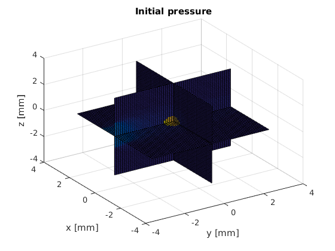
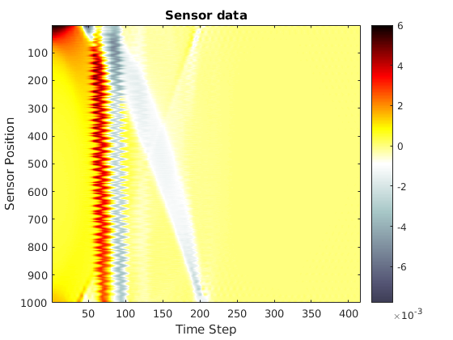

Contents
- Simulating the photoacoustic effect using K-Wave
- Create the k-Wave grid
- Create a PhotonMC mesh
- Define optical coefficients
- Create a light source
- Compute the initial pressure from the photon fluence
- Define the k-Wave sensor mask
- Move the perfectly matched layer (PML) outside of the computation domain and run the acoustic simulation
Simulating the photoacoustic effect using K-Wave
This example demonstrates simulation of a pressure field generated through the absorption of an externally introduced light pulse. The light propagation is simulated using PhotonMC and the propagation and detection of pressure wavefield is simulated using k-Wave, see http://www.k-wave.org/documentation/k-wave_initial_value_problems.php. The example also shows how the computation grid of k-Wave and mesh of PhotonMC can be made compatible. Note that k-Wave uses SI units (e.g. [m]) and PhotonMC works in millimetre-scale (e.g. [mm]). k-Wave is an open source acoustics toolbox for MATLAB and C++ developed by Bradley Treeby and Ben Cox (University College London) and Jiri Jaros (Brno University of Technology). The software is designed for time domain acoustic and ultrasound simulations in complex and tissue-realistic media.
k-Wave homepage: http://www.k-wave.org/. B. E. Treeby and B. T. Cox: "k-Wave: MATLAB toolbox for the simulation and reconstruction of photoacoustic wave-fields", Journal of Biomedical Optics, 15(2):021314, 2010.
clear all;
Create the k-Wave grid
Nx = 60; % number of grid points in the x (row) direction Ny = 60; % number of grid points in the y (column) direction Nz = 60; % number of grid points in the y (column) direction dx = 0.1e-3; % grid point spacing in the x direction [m] dy = 0.1e-3; % grid point spacing in the y direction [m] dz = 0.1e-3; % grid point spacing in the y direction [m] kgrid = makeGrid(Nx, dx, Ny, dy, Nz, dz); % Create two internal structures using makeDisk sphere = makeBall(Nx, Ny, Nz, Nx/2, Ny/2, Nz/2, 5); % Define the acoustic properties sphere_indices = find(sphere==1); medium.sound_speed = 1500*ones(Nx, Ny, Nz); % [m/s] medium.sound_speed(sphere_indices) = 1800; % [m/s] medium.density = 1000*ones(Nx, Ny, Nz); % [kg/m^3]
WARNING: makeGrid will be deprecated in a future version of k-Wave.
Update codes to use the syntax kgrid = kWaveGrid(...).
Create a PhotonMC mesh
PhotonMC uses triangles and tetrahedrons as the basis shape, whereas in k-Wave pixels and voxels are used. createGridMesh can be used to create a straightforward mapping between the triangles and pixels. Note that K-Wave uses matrices in the format matrix(X,Y,Z), whereas MATLAB t(c.f. meshgrid) and PhotonMC uses matrix(Y,X,Z) Therefore x and y should be swapped when moving between PhotonMC arrays and k-Wave arrays.
pmcmesh = createGridMesh(kgrid.y_vec*1e3, kgrid.x_vec*1e3, ... kgrid.z_vec*1e3); % [m to mm]
Define optical coefficients
For users accustomed to k-Wave, the optical coefficients can be set in similar fashion as in k-Wave, i.e. using multidimensional arrays. If one of the arrays defining the medium is given as multidimensional array to PhotonMC, the code will assume that the mesh was created using 'createGridMesh' and the output fluence will also given as a two dimensional array in solution.grid_fluence. See the example 'Working with pixel and voxel data' on how to achieve similar assignments using one dimensional indexing.
pmcmedium.scattering_coefficient = 0.01*ones(Nx, Ny, Nz); pmcmedium.absorption_coefficient = 0.001*ones(Nx, Ny, Nz); pmcmedium.absorption_coefficient(sphere_indices) = 0.02; pmcmedium.scattering_anisotropy = 0.9; % scattering % anisotropy % parameter % [unitless] pmcmedium.refractive_index = 1.0*ones(Nx, Ny, Nz); % Define the Gruneisen parameter describing photoacoustic % efficiency pmcmedium.gruneisen_parameter = 0.02*ones(Nx, Ny, Nz); % [unitless]
Create a light source
Set a light source with a width of 2 mm and cosinic directional profile at the bottom of the computation domain
boundary_with_lightsource = findBoundaries(pmcmesh, 'direction', ... [0 0 0], ... [-5 0 0], ... 1); pmcboundary.lightsource(boundary_with_lightsource) = {'cosinic'}; %%Run the Monte Carlo simulation solution = ValoMC(pmcmesh, pmcmedium, pmcboundary);
Initializing MC3D... Computation uses 16 threads Computing... ...done Done
Compute the initial pressure from the photon fluence
Note that since the medium was defined as three dimensional arrays, the output is also given as a three dimensional array.
% Compute the absorbed optical energy density % 1e3 converts [J/mm^2] to [J/m^2] pmcmedium.absorbed_energy = pmcmedium.absorption_coefficient .* ... solution.grid_fluence*1e3; % [J/m3] % Compute the initial pressure distribution source.p0 = pmcmedium.gruneisen_parameter .* pmcmedium.absorbed_energy; % [Pa]
Define the k-Wave sensor mask
% Define a circular sensor sensor_radius = 2e-3; % [m] num_sensor_points = 1000; % number of sensor points sensor.mask = makeCartSphere(sensor_radius, num_sensor_points);
Move the perfectly matched layer (PML) outside of the computation domain and run the acoustic simulation
The PML is a layer that absorbs waves for simulating free regions and is normally contained within the computation region of k-Wave. For a more straightforward mapping between the computation region of k-Wave and PhotonMC, the PML is moved outside of the computation region.
sensor_data = kspaceFirstOrder3D(kgrid, medium, source, sensor, ... 'PMLInside', false); [X Y Z] = meshgrid(kgrid.x_vec*1e3, kgrid.y_vec*1e3, kgrid.z_vec* ... 1e3); slice(X, Y, Z, source.p0, 0, 0, 0); xlabel('y [mm]'); ylabel('x [mm]'); zlabel('z [mm]'); view(-33,35); title('Initial pressure'); % plot the simulated sensor data figure; imagesc(sensor_data, [min(sensor_data(:)) max(sensor_data(:))]); colormap(getColorMap); ylabel('Sensor Position'); xlabel('Time Step'); c = colorbar; % create a colorbar colorbar; title('Sensor data');
Running k-Wave simulation... start time: 23-May-2018 18:38:43 reference sound speed: 1800m/s dt: 16.6667ns, t_end: 6.9167us, time steps: 416 input grid size: 60 by 60 by 60 grid points (6 by 6 by 6mm) maximum supported frequency: 7.5MHz smoothing p0 distribution... expanding computational grid... computational grid size: 80 by 80 by 80 grid points calculating Delaunay triangulation... precomputation completed in 29.4521s starting time loop... estimated simulation time 21.0806s... simulation completed in 20.5736s total computation time 50.1759s 